simple hello world:
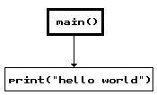hello world using global variables, functions and constants:
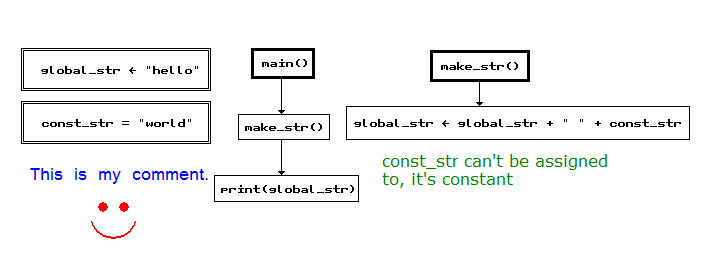very simple math library:

This is a specification of flow_chart esoteric language.
flow_chart is high-level, imperative (routine-based), interpreted language, whose inputs are raster images of flow charts. Recursion is supported as well as common data types including strings and lists.
The following paragraphs say the basic idea about the language interpreter. These are mostly ideas and recommedations as this document mainly focuses on the language itself, however because the language was designed with the interpreter idea in mind, anyone implementing the interpreter should read this chapter and consider following it as closely as possible.
The language is intended and designed to be interpreted, using bytecode is very recommended. The interpreter should be user friendly as is usually common with mose copilers/interpreters. If there is any syntax or semantics error in the program, the interpreter must let the user know and provide them with following information (with exception of bytecode without debug information):
The interpreter may print multiple syntax errors that happen during program compile.
The interpreter should be able to produce bytecode only and should be able to interpret it even without source code (image) present. The bytecode can be generated either with or without debug information. The debug information will allow the interpreter to still inform the user about run-time errors just as if the program was interpreted from source code. If the debug information is not present in the bytecode, the interpreter will only inform the user there was an error and what kind of action it was caused by, but it mustn't say anything more.
The source code medium of flow_chart is, unlike with most computer languages, a raster image in PNG or BMP format. However, the image should be, unlike with for example Piet, human readable as it represents a flow chart. We'll suppose the image is represented as an 2D array of RGB values, as is common, however, the language is designed to only use black and white color in order to be easily printable on paper, though other colors are allowed to be used (they'll just be ignored). The black color means [0,0,0] RGB value, the white means [255,255,255] RGB value (if there is also an alpha channel, it is ignored).
There exist four types ob blocks that the flow chart consists of, they are:
The bloocks look like this:
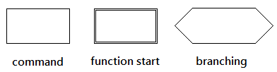The width and height of the blocks doesn't matter, but they cannot be empty so the theoretical minimum size depends on the size of a single text character. The block border must always be black and one pixel wide. The function start block must always have three-pixel wide border. The directive border must have double border consisting of one black, one non black and one black pixels, as in the picture. The branching block left (right) border must be a line that starts going one pixel left (right) and one down, then at some point it must change to going one pixel right (left) and one down, before it connects to the bottom border line of the block. Therefore other possible valid blocks can look like this:
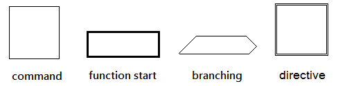
The following examples are wrong:
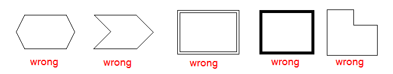A block must always contain a non-empty string. The string can be placed anywhere inside the block, it can't touch the border and it must not overlap it. The text must be written in black color and it must use the font described in this document.
The blocks are connected using one-pixel wide straight (horizontal or vertical) lines with arrows (which represent the control flow) as in the picture:
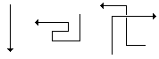The lines can overlap in a way that's apparent from the picture - one of the lines must have a one pixel white border around it in order to distinguish the two lines from each other. The arrow must have exactly the shape as in the picture, it can be pointing in each of four directions (left, right, up, bottom).
Each line must always be connecting exactly two blocks that are connected to the same function block (that means there can be no goto from within one function to another). It doesn't matter at which point the line comes from or into a block or a line (its direction is decided by the arrow) with the exception of branching block, where the input and "then" lines must come either to/from the top border or to/from bottom border and the "else" line must come from the tip of either left or right border line. The followinf picture shows some valid block connections:
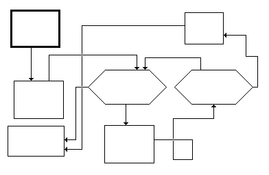The folowing examples are wrong:
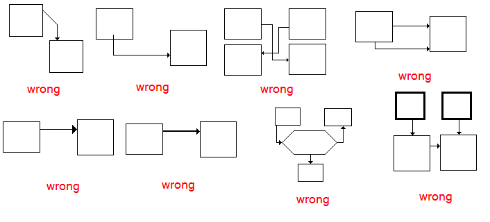Comments can be writen (or drawn) anywhere as long as they are other color than black and they do not interfere with the code. The reason for this is that the interpreter only recognises black and non-black pixels.
The language uses its own fixed size extended ASCII font to represent text elements. The character size is 7 × 8 pixels and there is exactly one pixel space between the characters. The font characters look like this (starting from top left, going to bottom right with 1 pixel space between rows and columns)
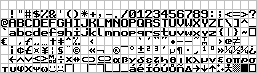Language interpreters may include the possibility to provide custom font maps but the program is then formally not in pure flow_chart which only supports the font given above.
The language is case-sensitive. The following grammar describes the syntax (and only syntax, not expression evaluation order etc.) of the language text elements:
| command: | <CMD> | ➝ | <ASSIGN> | <CALL> | return <EXP> |
| assign: | <ASSIGN> | ➝ | <VAR> ← <EXP> | <INIT> |
| list constructor: | <INIT> | ➝ | list |
| variable or list item: | <VAR> | ➝ | <IDENTIFIER_NS> | <IDENTIFIER_NS> [ <EXP> ] |
| expression: | <EXP> | ➝ | ( <EXP> ) | <VAR> | <CALL> | <CONST> | <EXP> <OP> <EXP> |
| operator: | <OP> | ➝ | + | - | ÷ | / | * | × | % | | ¬ |
| literal: | <CONST> | ➝ | <INT> | <FLOAT> | <STRING> | <BOOL> |
| condition: | <COND> | ➝ | <EXP> <CMP> <EXP> |
| comparison operators: | <CMP> | ➝ | = | ≠ | "<" | ">" | ≥ | ≤ |
| function call: | <CALL> | ➝ | <IDENTIFIER_NS> ( <PARAMS> ) |
| function header: | <FUNC> | ➝ | <IDENTIFIER> ( <PARAM_LIST> ) | <IDENTIFIER> () |
| formal parameter list: | <PARAM_LIST> | ➝ | <IDENTIFIER> | <IDENTIFIER> , <PARAM_LIST> |
| optional namespace + identifier: | <IDENTIFIER_NS> | ➝ | <IDENTIFIER> : <IDENTIFIER>| <IDENTIFIER> |
| directive: | <DIR> | ➝ | include <PATH> | <IDENTIFIER> = <CONST> | <IDENTIFIER> ← <CONST> | namespace <IDENTIFIER> |
Some of the above nonterminals are described by regexps:
| <IDENTIFIER> | := | ([a-Z] | "_") (([a-Z] | [0-9] | "_")*) |
| <FLOAT> | := | |
| <BOOL> | := | "true" | "false" |
| <STRING> | := | \" () \" |
The language keywords (that of course can't be used as identifiers) are shown in the following list:
besides these, built-in function identifiers can neither be used for user identifiers (see built-in functions).
There are four atomic and one composite data types in flow_chart. These are:
flow_chart is dynamic-typed, that means that variables can change type during runtime. A new variable is created when it is first assigned to, using "←" symbol.
There can be global variables, see section global directives.
A function has only access to its own variables (variables declared inside itself and only within the concrete instance of the function during recursion) and global variables, not to the callee's variables though. If there is a global variable of some name, let's say a, there cannot be any local variable with that name, a, anywhere else in the program, as it cannot be created, because this is done by assignement which in this case just causes assignment to already existing global variable. This should be reported as an error at compile-time.
Global variables can be declared inside directive blocks. To declare a global variable it must also be initialised with a value, using "←" symbol.
Besides global variables, global constants can be declared as well. Constants can only be read, any attempt to write to a global constant must result in compile-time error. In order to declare a global constant a value must be linked to it, using "=" symbol.
Programs in flow_chart are always single thread only.
The program starts its execution in main() function, named exactly main and having zero parameters, which must be defined in the program being run. If such function doesn't exist, the interpreter yields a compile-time error.
The program then proceeds to the next block that is marked with one outcoming arrow, then to another one and so on, until the end main function is exited either by executing its last block (in which case 0 is returned to the operating system) or by return command (in which case the return command's value is returned to the operating system, or 0 if it's not of integer data type) or by calling built-in halt()/halt(value) function from anywhere within the program being run (the value returned to the operating system is specified in the description of the halt(value) function).
If function call (<CALL> grammar element) f(p1,p2,...,pn) is encountered during program execution, the control is set to the starting block of the function named f that expects exactly n parameters, i.e. it's header is f(q1,q2,...,qn). New local variables named q1 ... qn are then created and assigned values p1 ... p2 in this order. The variables q1 ... qn are local to the instance of the function f, that means that they are different from any other variables named q1 ... qn anywhere in the program except for the body of the function f and they are also different from the same named variables in another instance of the function f during recursion, indeed. The variables q1 ... qn are destroyed when the function f ends. For more information on functions see the section functions.
Branching is achieved using the branching blocks. Each block must contain exactly one condition written accoording to <COND> grammar element. The condition is always an comparison. If the value of the comparison is true, the program flow continues with "then" branch (coming from top or bottom of the block), otherwise the program proceeds to "else" branch (coming from either left or right, see the syntax section for more).
Loops are achieved via branching, as is common with flow charts.
Operator priority is as follows:
| priority | operators |
|---|---|
| 1 (highest) | ( ) [] |
| 2 | ¬ |
| 3 | × ÷ |
| 4 | |
| 5 | + - |
The following table explains the operator semantics. Using the operator with data types that are not allowed results either in compile-time (if the data types are known at compile time) or run-time (otherwise) error.
| operator(s) | operand types | result type | description |
|---|---|---|---|
| a + b, a - b, a × b | int int | int | addition, substraction and multiplication |
| float float | float | ||
| int float | float | ||
| float int | float | ||
| a ÷ b | int int | float | floating point division, division by zero (float or int) causes an compile-time (if possible) or runtime-time (othrwise) error. |
| float float | float | ||
| int float | float | ||
| float int | float | ||
| a b | int int | int | integer a / b division remainder (modulo) defined as:
|
| a < b, a > b, a ≤ b, a ≥ b | int int | bool | less than, greater than, less or equal to, greater or equal to |
| float float | bool | ||
| int float | bool | ||
| float int | bool | ||
| ¬ a | bool | bool | logical negation (false to true and true to false) |
Recursion, even indirect, is allowed. Parameters of atomic data types (int, float, string and bool) are passed by value, lists are passed by reference. The function can return any atomic data type, lists can't be returned.
Function parameters behave just as if they were variables created at the beginning of the function.
Function declaration and definition are the same thing in flow_chart, which means you declare the function as soon as you define it - there are no forward declarations as there is no "forward" and "backward" in the source image.
Overloading is allowed, however it can only be used to make multiple functions of the same name that differ only by number of parameters since functions don't define the data types of their parameters.
Function return values are also not specified. Function can return any value it wishes and it can return different data types at different times. If the function ends without returning a value, boolean false value is returned implicitly.
For more information on functions see the section control flow.
A program in flow_char can be separated into modules, which means its source code consists of multiple images in separate files. There is always a main module, which is the one where the main() function is defined.
To include additional modules into the main module, a directive block must be put in the main file with include "path" string in it (see grammar section), where path is the filepath of the module being included.
When the module m is included in the program p, it is possible to use all the functions, global variables and global constants from m just as if they were declared/defined in p. Multiple include directives can be present in the program, even referencing the same module, though it is included only once in that case.
flow_chart supports module namespaces, though they needn't be used if not necesarry. If there is a symbol (function, global variable or global constant) a in both module m and module p and m is included from within p, then when a is used inside p, a decalred/defined in p is referenced by default. To use a declared/defined in m in this case it is needed to create a namespace by putting a directive in m with string namespace name where name is the name of the namespace for m. A maximum of one namespace directive can be present in any one file, otherwise a compile-time error must occur. After creating the namespace p can reference the above a symbol from m with the syntax name:a.
The include directive causes the interpreter to load the module internally if it hasn't already been loaded, so it's allowed to even have cyclic dependencies between modules formed via include directives (m includes p and p includes m).
simple hello world:
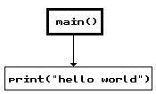hello world using global variables, functions and constants:
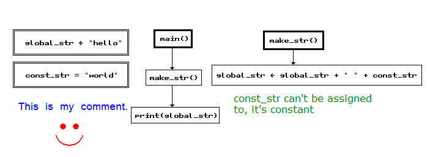very simple math library: